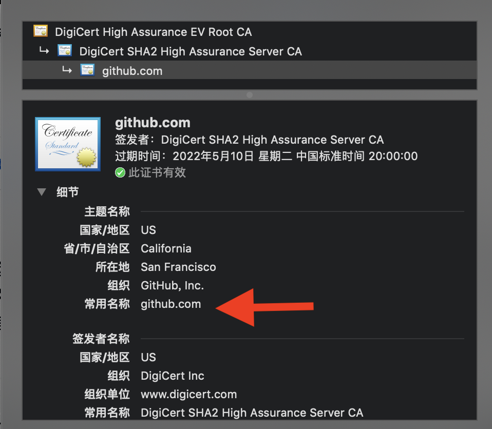

在对一个目标进行渗透测试前，最重要的是对其进行信息收集，信息收集的完成度某种程度上决定了后续渗透的成功与否。这篇文章主要是总结一下自己在信息收集过程中用到的一些工具和思路，给自己做个笔记。
信息收集的流程
当我们拿到一个目标时，一般是域名信息，根据这个目标，信息收集会做以下的事情，这个流程只是我自己所理解的:
- 子域名收集。
- IP信息收集。
- 服务/端口收集。
- 端口的指纹收集（包括防火墙(waf)识别）
- 网站目录结构收集。(敏感信息泄露、路由扫描)
- Github源代码收集。
- 漏洞扫描收集(可选)。
1.子域名收集
针对于一个域名子域名有哪些收集方式呢？先介绍子域名收集工具，一般都会使用子域名工具来收集。
oneforall
从它的文档中可以看出它涵盖了很多收集子域名的方式。让我们来简单了解各个模块收集子域名的原理。
证书透明度
证书透明度(Certificate Transparency, CT)是一个试验性的IETF开源标准和开源框架，证书颁发机构CA必须将每个SSL或TLS证书发布到公共日志中。SSL和TLS证书通常包含域名、子域名和电子邮件地址。如下入所示

证书透明CT日志中找到的域/子域可能已经不存在。
- 分享几个在线证书透明日志搜索:
搜索引擎
搜索引擎主要是利用各大搜索引擎通过google hacking的手段去收集子域名。site:domain
- Bing搜索引擎
- Google搜索引擎
- Baidu搜索引擎
字典爆破
准备一个常用子域名字典，然后模拟请求dns服务器，观察子域名是否有成功被解析。它的一个问题是若域名设置了泛解析，那么几乎所有的子域名都能够被解析，造成很多无用子域名数据。
解决方案是将爆破后的子域名+IP结果一起存入结果，检查同一IP对应的子域名，若数量过多(设置阈值)，则判定为无用子域名。构造随机的特殊字符串，若也能解析成功，则说明使用了泛解析。
DNS数据集
又称DNS聚合器，聚合了大量DNS数据集。可通过它们来搜索给定域的子域。
- VirusTotal
- 运行自己的被动DNS复制服务，通过存储用户提交的URL解析结果来建立的https://www.virustotal.com/gui/home。
- 运行自己的被动DNS复制服务，通过存储用户提交的URL解析结果来建立的https://www.virustotal.com/gui/home。
- DNSdumpster
- 可以挖掘出指定域潜藏的大量子域。https://dnsdumpster.com/
- 可以挖掘出指定域潜藏的大量子域。https://dnsdumpster.com/
常规检查
常规检查主要是通过http头、域传送漏洞等，主要包括以下内容:
- HTTP头。(CSP)
- 文件泄露。(robots、sitemap、crossdomain.xml)
- 域传送漏洞。
空间搜索引擎
利用网上一些网络空间搜索引擎来收集子域名。
2.IP信息收集
IP信息收集这块，我把它主要分为2部分。一部分是直接的IP搜集和真实IP的搜集，还有一部分是针对于C段IP信息的收集。
直接的IP收集
直接的IP收集，在前面的子域名收集中，也会连带着将这部分内容输出。在目标存在CDN的情况下，这种方式搜索到的IP大概率是CDN的IP而不是真实IP，这对于后续利用来说十分有限。但还是介绍几个寻找IP的工具。
- nslookup
- dig
真实IP收集
为什么要真实的IP，只有拿到了真实的IP，才能进行下一步对真实服务器的端口开放情况进行扫描。如何获取真实的IP呢？
利用子域名
一般来说对主营业务，访问压力大的域名才会使用CDN，而子域名有可能部署在同一台服务器或者同一个C段，就有可能从中找到真实的IP地址。
历史DNS记录
通过平台以前收集到的ip与域名绑定的历史记录进行寻找，可能存在以前并未使用CDN的情况。介绍几个历史DNS查询平台。
邮件/RSS订阅
通过邮件订阅/RSS订阅让目标站主动联系，查看其邮箱服务器的IP，有可能与web服务在一个服务器上。
国外访问
国内的CDN往往只对国内的用户，通过国外访问，可能会得到真实的ip地址。介绍一个国外代理网站。
HTTPS证书
利用censys搜索网站的ssl证书及hash，然后在crt上查找目标网站SSL证书的hash，然后再用censys搜索该hash即可得到真实的ip地址。
网站漏洞
利用phpinfo、SSRF、XSS等漏洞让目标主动联系。
C段IP信息收集
这个在实际的渗透测试可能并不是那么必须的，对目标拿到的IP信息比较少，且在已有的目标中没有什么漏洞时，将思路转为子网中的其他服务器。收集的方式很多，fofa等工具，也可以使用nmap这一强大的渗透利器。
1 | nmap -sS -O -P0 -oG - 192.168.231.0/24 | awk '/open/{print $2}' |
3.服务收集
服务收集的目的主要是为了查看目标开放的端口服务，然后根据各种端口服务的一些指纹信息再进行进一步的利用。
一般来说，都会使用网络空间搜索引擎(如fofa、shodan之类的)进行查询直接获得结果。本着学习的目的，在这里介绍一下Nmap这个强大的工具。
Nmap
Nmap有很多种扫描端口的方式，根据不同的场景和限制选择不同的方式。
最简单的方式是不加任何参数。
1 | nmap 192.168.1.23 |
加上-p参数，对指定端口进行扫描。
1 | nmap -p 80 192.168.1.23 |
加入-sV参数，在进行端口扫描时检测服务端软件的版本信息(即指纹信息)。
1 | nmap -sV 192.168.1.23 -p 80 |
加入-O参数，端口扫描时识别目标主机的操作系统。
1 | nmap -O 192.168.1.23 |
加入-Pn参数，当目标主机屏蔽了ping请求，Nmap会认为该主机没有开机，选择禁用Nmap的主机检测功能，Nmap就会进行全套的检测工作。
1 | nmap -Pn 192.168.1.23 |
加入-A参数，表示综合扫描，包括OS识别、版本探测和traceroute综合扫描。
1 | nmap -A 192.168.1.23 |
加入-sP参数，代表Ping扫描。
1 | nmap -sP 192.168.1.23-100 |
加入-sC参数，根据端口识别的服务，调用默认脚本
1 | nmap -sC 192.168.1.23 -p 8080 |
TCP扫描选项
- -sT (TCP连接扫描)
- -sS (SYN扫描) 隐蔽
- -sN (NULL扫描)
- -sF (FIN扫描) 隐蔽、漏扫
- -sX (XMAS扫描)
- -sW (TCP窗口扫描)
- -sl (指定僵尸主机发送扫描数据包)
UDP扫描选项
- -sU
使用脚本
在它的官网中按照类别将脚本进行分类。如下图所示:
1 | nmap --script=address-info www.baidu.com |
除了端口扫描外，还具备以下其他功能:
- 主机探测
- 服务/版本探测
- 操作系统检测
- 网络路由跟踪
1 | nmap -traceroute www.baidu.com |
4.端口指纹收集
这一阶段的任务主要是根据上述的扫描结果，对开放端口的服务、目标主机以及防火墙等信息进行收集识别，便于后续的漏洞利用。在这里分为应用服务指纹识别和防火墙(WAF)指纹识别。
应用指纹收集
应用指纹信息在使用端口扫描时，能够收集到一些服务的信息。那么这些服务尤其是网站服务是需要进一步地进行CMS指纹识别等应用信息的收集。按照惯例推荐CMS指纹识别工具。
WAF指纹收集
WAF指纹收集的收集并不容易，根据响应包的信息，或者是构造特殊的请求，然后查看响应结果。由于本人目前对于企业的一些WAF不太熟悉，这一部分暂缓。
5.网站目录收集
这一步主要是针对于目标是网站应用时需要做的一步。通过目录信息收集，有可能会找出泄漏的网站源码、配置文件等，但更多的是找出了更多的API接口。在这里同样介绍工具，原理很简单就是根据字典来不断拼接路径，发送请求，然后判断该路径是否存在。
dirsearch是一个包含丰富字典的目录扫描工具，它的字典大约有6000多个，在限制扫描的网站目标中要慎用。同时它也提供使用者选择自己字典的功能。
6.Github源码收集
在收集了网站的一些特征后，比如用到了一个名为xxx.js的文件，可以利用该特征去github上搜索，有可能搜到开发者上传的源码。
7.漏洞扫描(可选)
在真实的渗透环境中，大部分的时候都是手工寻找漏洞，在目标网站对于扫描器不敏感的情况下，也可以使用诸如Nessus、AWVS的工具进行一个漏扫。